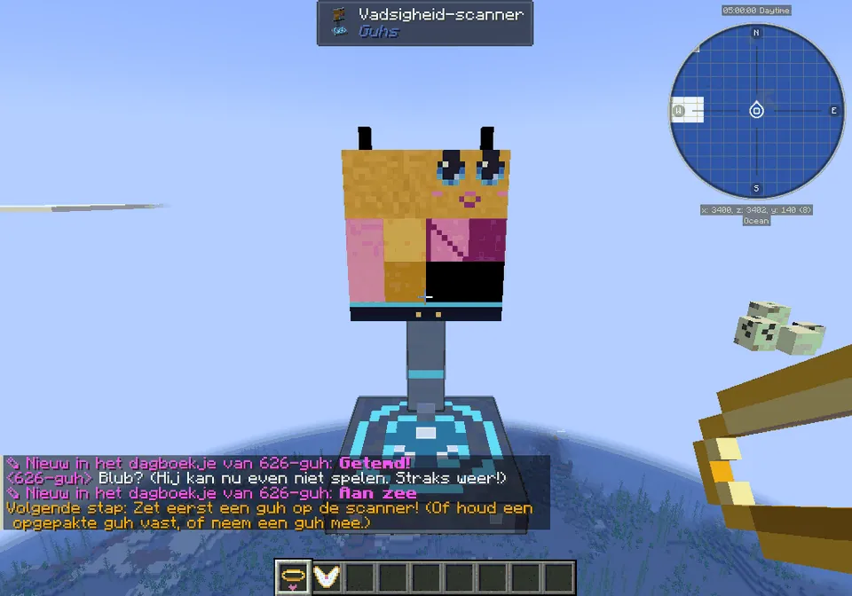
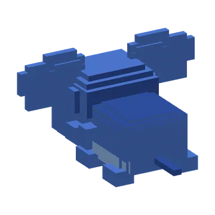
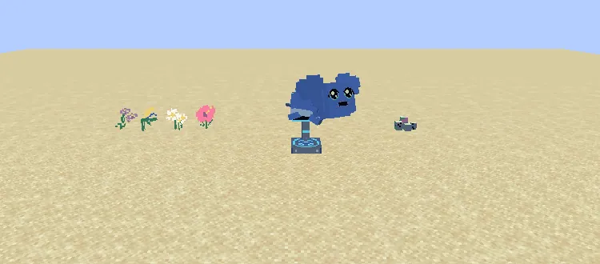

A capsule crashed on Guhwai'i, with Experiment 626 inside. Lilo-guh wants him as a pet. Ohana means family!
Op Guhwai'i is een capsule neergestort, met Experiment 626 erin. Lilo-guh wil hem als huisdier. Ohana betekent familie!

Ohana: the story of 626-guhOhana: het verhaal van 626-guh
Experiment 626 is a blue alien guh with big ears, four paws and an extra pair of little arms, made to be too vads (but a guh can never be too vads!). His capsule crashed on Guhwai'i and Lilo-guh adopted him from the guh-asiel. He wrecks things, but it's only mess and he never hurts anyone. Help him be good:
Experiment 626 is een blauwe alien-guh met grote oren, vier pootjes en een extra paar armpjes, gemaakt om te vads te zijn (maar een guh kan nooit te vads zijn!). Zijn capsule stortte neer op Guhwai'i en Lilo-guh heeft hem uit het guh-asiel geadopteerd. Hij sloopt van alles, maar het is alleen rommel en hij doet nooit iemand pijn. Help hem om goed te zijn:
- Say aloha to Lilo-guh at the stilt house.Zeg aloha tegen Lilo-guh bij het paalhuisje.
- Find the crashed capsule on top of the island.Vind de neergestorte capsule boven op het eiland.
- Back at the house: the adoption scene at the asiel.Terug bij het huisje: de adoptie bij het asiel.
- Clean up 5 rommeltjes 626 left around Nani-guh (click them: only mess, nothing broken!).Ruim 5 rommeltjes op die 626 rond Nani-guh heeft achtergelaten (klik erop: alleen rommel, niks kapot!).
- Teach him to be lief: give 626-guh a kokosnoot, a roze hibiscus and 8 kaas knabbels.Leer hem lief te zijn: geef 626-guh een kokosnoot, een roze hibiscus en 8 kaasknabbels.
"Ohana means family. Family means nobody gets left behind... or forgotten. Njeg.""Ohana betekent familie. Familie betekent dat niemand wordt achtergelaten... of vergeten. Njeg."
Rewards: the poster, a spare ukelele (strum it and all guhs around you dance), four pieces of clothing and 16 kaas knabbels. Then give the 626-guh a kaas knabbel and your own 626-guh comes home with you.
Beloningen: de poster, een reserve-ukelele (tokkel erop en alle guhs om je heen gaan dansen), vier kleertjes en 16 kaasknabbels. Geef de 626-guh daarna een kaasknabbel en je eigen 626-guh gaat met je mee naar huis.
Guhwai'i: Lilo-guh, 626-guh en ohana
Your 626-guhJouw 626-guh
Blue fur, a dark back patch, a big dark nose, big notched ears and two extra little arms.Blauwe vacht, een donker vlekje op zijn rug, een grote donkere neus, grote gekartelde oren en twee extra armpjes.

Climbs walls and ceilingsKlimt tegen muren en plafonds
He climbs up walls (also when you ride him) and hangs upside down from ceilings.Hij klimt tegen muren op (ook als je op hem rijdt) en hangt ondersteboven aan plafonds.

Carries twoDraagt er twee
With his extra arms he carries two things at once: double loads in the huisje chores.Met zijn extra armpjes draagt hij twee dingen tegelijk: dubbel sjouwen bij de huisjesklusjes.
Steps (FTB quests)Stappen (FTB-quests)
The quest texts are in Dutch, like everything in the game.De questteksten zijn Nederlands, net als alles in het spel.
- Aloha, Lilo-guh!
Op het strand van Guhwai'i staat een huisje op palen. Daar wonen Lilo-guh en haar grote zus Nani-guh. Lilo-guh zag gisteravond een vallende ster... Praat met haar!Op het strand van Guhwai'i staat een huisje op palen. Daar wonen Lilo-guh en haar grote zus Nani-guh. Lilo-guh zag gisteravond een vallende ster... Praat met haar! - Een vallende ster?
Boven op de heuvel van het eiland ligt een neergestorte capsule. Een krater, rook, een open luikje... en binnen een rare meter. Van wie zou hij zijn?Boven op de heuvel van het eiland ligt een neergestorte capsule. Een krater, rook, een open luikje... en binnen een rare meter. Van wie zou hij zijn? - ONBEREKENBAAR VAHOEG
In de capsule staat de vadsigheid-scanner. Zet een guh op de plaat (of klik gewoon: je dichtstbijzijnde guh springt erop) en kijk naar de meter VADSIGHEIDSNIVEAU: een beetje vads... vads... heel vads... VAHOEG... ONBEREKENBAAR VAHOEG! Hij werkt op elke guh. Een guh kan nooit te vads zijn!In de capsule staat de vadsigheid-scanner. Zet een guh op de plaat (of klik gewoon: je dichtstbijzijnde guh springt erop) en kijk naar de meter VADSIGHEIDSNIVEAU: een beetje vads... vads... heel vads... VAHOEG... ONBEREKENBAAR VAHOEG! Hij werkt op elke guh. Een guh kan nooit te vads zijn! - Uit het asiel
Vertel Lilo-guh over de capsule. Ze weet meteen wie erin zat: het blauwe guhtje met vier armpjes uit het asiel! Ze adopteert hem: vanaf nu heet hij 626-guh.Vertel Lilo-guh over de capsule. Ze weet meteen wie erin zat: het blauwe guhtje met vier armpjes uit het asiel! Ze adopteert hem: vanaf nu heet hij 626-guh. - Alleen maar rommel
626-guh heeft het huisje overhoop gehaald! Kussenveertjes, een omgevallen emmertje, kokosschilletjes... Het is alleen maar rommel, niks is kapot. Help Nani-guh en klik de rommeltjes weg.626-guh heeft het huisje overhoop gehaald! Kussenveertjes, een omgevallen emmertje, kokosschilletjes... Het is alleen maar rommel, niks is kapot. Help Nani-guh en klik de rommeltjes weg. - Lief zijn is best vahoeg
626-guh moet leren lief te zijn. Laat het hem zien: geef hem een kokosnoot, een roze hibiscus en 8 kaasknabbels (rechtsklik op hem, bij het asiel).626-guh moet leren lief te zijn. Laat het hem zien: geef hem een kokosnoot, een roze hibiscus en 8 kaasknabbels (rechtsklik op hem, bij het asiel). - Ohana betekent familie
Ga terug naar Lilo-guh. "Ohana betekent familie. Familie betekent dat niemand wordt achtergelaten... of vergeten. Njeg." Je krijgt de poster, een ukelele en de eilandkleertjes, en 626-guh mag met je mee!Ga terug naar Lilo-guh. "Ohana betekent familie. Familie betekent dat niemand wordt achtergelaten... of vergeten. Njeg." Je krijgt de poster, een ukelele en de eilandkleertjes, en 626-guh mag met je mee! - Experiment 626, thuis!
Geef 626-guh bij het asiel een kaasknabbel: dan springt hij in je armen en gaat hij met je mee naar huis. Maar één keer per speler! Hij klimt tegen muren op, hangt aan het plafond en draagt bij klusjes dubbel zoveel.Geef 626-guh bij het asiel een kaasknabbel: dan springt hij in je armen en gaat hij met je mee naar huis. Maar één keer per speler! Hij klimt tegen muren op, hangt aan het plafond en draagt bij klusjes dubbel zoveel. - Aloha, njeg!
Open het guhmenu van je 626-guh en druk op Ukelele (of kies het emote): hij tokkelt een liedje. "Aloha, njeg!"Open het guhmenu van je 626-guh en druk op Ukelele (of kies het emote): hij tokkelt een liedje. "Aloha, njeg!" - Tokkel tokkel
Speel zelf op de reserve-ukelele van 626-guh (rechtsklik): alle guhs om je heen gaan dansen!Speel zelf op de reserve-ukelele van 626-guh (rechtsklik): alle guhs om je heen gaan dansen! - Eilandkleertjes
Het hula-rokje, de bloemenkrans, de 626-oren met antennes en het surfplankje: de kleertjes van Guhwai'i! Houd ze ingedrukt om ze te ontgrendelen voor al je guhs.Het hula-rokje, de bloemenkrans, de 626-oren met antennes en het surfplankje: de kleertjes van Guhwai'i! Houd ze ingedrukt om ze te ontgrendelen voor al je guhs. - Aan de muur!
Hang de poster Onberekenbaar vahoeg op. (Je kunt er meer maken: papier, lichtblauwe en roze kleurstof en gloeisteenpoeder. En er is ook een groot schilderij van!)Hang de poster Onberekenbaar vahoeg op. (Je kunt er meer maken: papier, lichtblauwe en roze kleurstof en gloeisteenpoeder. En er is ook een groot schilderij van!) - Krak, slurp!
Onder de bladeren van een guh-palm hangen kokosnoten: groen, dan geel, dan bruin. Pluk een bruine (klik erop) en eet hem op. Of geef hem aan je guh: guhs zijn dol op kokosnoot!Onder de bladeren van een guh-palm hangen kokosnoten: groen, dan geel, dan bruin. Pluk een bruine (klik erop) en eet hem op. Of geef hem aan je guh: guhs zijn dol op kokosnoot! - Kokosmelk!
Een kokosnoot en een glazen flesje: kokosmelk! Koel, zoet en je voelt je meteen beter.Een kokosnoot en een glazen flesje: kokosmelk! Koel, zoet en je voelt je meteen beter. - Een eigen palmpje
Plant een kokosnoot in het zand of op gras: er groeit een guh-palm uit, met een gezichtje in de stam. Klik op dat gezichtje: hij knipoogt!Plant een kokosnoot in het zand of op gras: er groeit een guh-palm uit, met een gezichtje in de stam. Klik op dat gezichtje: hij knipoogt! - Een bloem achter je oor
Op Guhwai'i bloeien roze hibiscus, witte plumeria, oranje paradijsvogelbloemen en paarse orchideeën. Pluk een roze hibiscus!Op Guhwai'i bloeien roze hibiscus, witte plumeria, oranje paradijsvogelbloemen en paarse orchideeën. Pluk een roze hibiscus! - Knak, knak!
In het warme zand liggen Schilly-eitjes. 's Nachts gaan ze sneller... knak, knak! Er komen kleine Poepschillytjes en Schillytjes uit. Wacht erbij en zie ze uitkomen!In het warme zand liggen Schilly-eitjes. 's Nachts gaan ze sneller... knak, knak! Er komen kleine Poepschillytjes en Schillytjes uit. Wacht erbij en zie ze uitkomen! - Snorkelen
Zwem in de warme lagune van Guhwai'i. Op de bodem groeit een rif van kaaskoraal (bij kaaskoraal kun je onder water ademen!), met koraal en guhvisjes.Zwem in de warme lagune van Guhwai'i. Op de bodem groeit een rif van kaaskoraal (bij kaaskoraal kun je onder water ademen!), met koraal en guhvisjes. - Guhdex: Guhwai'i
Zet 626-guh, Lilo-guh en Nani-guh in je Guhdex (kom gewoon dichtbij).Zet 626-guh, Lilo-guh en Nani-guh in je Guhdex (kom gewoon dichtbij).
See alsoZie ook
 Het paalhuisje van Lilo en NaniStructuresBouwwerken
Het paalhuisje van Lilo en NaniStructuresBouwwerken Guhwai'iBiomesBiomen
Guhwai'iBiomesBiomen De neergestorte capsuleStructuresBouwwerken
De neergestorte capsuleStructuresBouwwerken